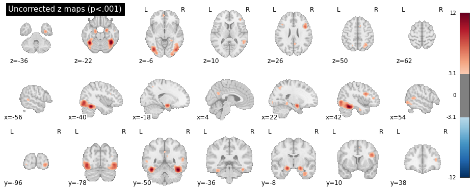
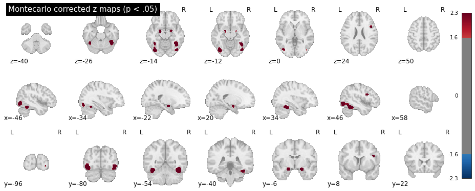

NiMARE Meta-Analysis¶
This guide demonstrates how to download and process the Neurosynth database using NiMARE, a Python-based framework designed for neuroimaging meta-analyses.
This step-by-step tutorial covers downloading the Neurosynth data, converting it into a NiMARE-compatible dataset, enriching it with article abstracts, filtering studies based on specific criteria, and performing custom meta-analyses.
Before starting, ensure NiMARE and required dependencies are installed in your environment:
Tip
Before starting a new project, make sure you set up your environment correctly. Each project should have its own dedicated environment. Please, follow the instructions provided in this and this section.
1. Importing Necessary Packages¶
Begin by importing all necessary libraries required throughout the script. These libraries are essential for downloading data, processing datasets, running analyses, and visualizing results.
# --- Step 1: Import All Necessary Packages ---
import os
import shutil
import numpy as np
from scipy.stats import norm
from nimare.dataset import Dataset
from nimare.extract import download_abstracts, fetch_neurosynth
from nimare.io import convert_neurosynth_to_dataset
from nimare.meta.cbma.ale import ALE # ALE algorithm for meta-analysis
from nimare.correct import FWECorrector # Family-wise error correction
from pprint import pprint
from nilearn.plotting import plot_stat_map
from nilearn import datasets # Neuroimaging datasets
from nilearn.reporting import get_clusters_table
import nibabel as nib
2. Downloading the Neurosynth Database¶
In this section, we’ll create an output directory where the downloaded Neurosynth data will be stored. The NiMARE function fetch_neurosynth is used to download the data.
Note
Ensure that you replace the path in out_dir with one that matches your own directory structure.
# --- Step 2: Downloading the Neurosynth Database ---
# Set the output directory for storing downloaded Neurosynth data
# Make sure to change this to a directory path on your own machine
out_dir = os.path.abspath("./nimare_data")
os.makedirs(out_dir, exist_ok=True) # Create the directory if it doesn't already exist
# Download Neurosynth data using NiMARE’s `fetch_neurosynth` function
# Set version to the latest available (version "7" as of October 2024)
files = fetch_neurosynth(
data_dir=out_dir, # Specify directory to save data
version="7", # Neurosynth data version to download
overwrite=False, # Set to True to re-download data if it already exists
source="abstract", # Use article abstracts as the source
vocab="terms", # Use "terms" as the vocabulary type
)
files = files[0]
# Print details of the downloaded files to understand the data structure
pprint(files)
The pprint command should output something like this:
pprint(files) # Display information about the downloaded files
{'coordinates': './nimare_data/neurosynth/data-neurosynth_version-7_coordinates.tsv.gz',
'features': [{'features': './nimare_data/neurosynth/data-neurosynth_version-7_vocab-terms_source-abstract_type-tfidf_features.npz',
'vocabulary': './nimare_data/neurosynth/data-neurosynth_version-7_vocab-terms_vocabulary.txt'}],
'metadata': './nimare_data/neurosynth/data-neurosynth_version-7_metadata.tsv.gz'}
3. Converting Downloaded Neurosynth Data into a NiMARE-Compatible Dataset¶
Once Neurosynth data is downloaded, we convert it to NiMARE’s dataset format for easier manipulation and analysis. We’ll then add abstracts to this dataset using study PMIDs.
- Define the path for saving the dataset.
- Convert the data using
convert_neurosynth_to_dataset. - Add article abstracts with
download_abstracts.
# --- Step 3: Converting Neurosynth Data to a NiMARE-Compatible Dataset ---
# Define the path for the NiMARE-compatible dataset file
dataset_path = os.path.join(out_dir, "neurosynth_dataset.pkl.gz")
# Convert and save Neurosynth data to NiMARE dataset format if it doesn’t already exist
if not os.path.exists(dataset_path):
neurosynth_dset = convert_neurosynth_to_dataset(
coordinates_file=files["coordinates"], # Path to Neurosynth coordinates
metadata_file=files["metadata"], # Path to metadata file
annotations_files=files["features"], # Path to feature files
target="mni152_2mm",
)
neurosynth_dset.save(dataset_path) # Save the converted dataset
print(f"Dataset saved to: {dataset_path}")
else:
neurosynth_dset = Dataset.load(
dataset_path
) # Load existing dataset if already created
print(f"Dataset loaded from: {dataset_path}")
# Define path for saving the dataset with abstracts
abstracts_path = os.path.join(out_dir, "neurosynth_dataset_with_abstracts.pkl.gz")
# Download and add abstracts to the dataset if it doesn’t already include them
if not os.path.exists(abstracts_path):
# Note: Replace "example@example.edu" with your email address for access to PubMed
neurosynth_dset = download_abstracts(neurosynth_dset, "example@example.edu")
neurosynth_dset.save(abstracts_path) # Save dataset with abstracts
print(f"Dataset with abstracts saved to: {abstracts_path}")
else:
neurosynth_dset = Dataset.load(
abstracts_path
) # Load dataset with abstracts if already created
print(f"Dataset with abstracts loaded from: {abstracts_path}")
# Verify dataset by printing a sample of the abstracts and counting entries
pprint(neurosynth_dset.texts.head()) # Display the first few entries of abstracts
print(f"Number of abstracts: {len(neurosynth_dset.texts)}")
4. Creating a Subset of Data¶
The NiMARE dataset allows data manipulation to create subsets that meet specific requirements. This enables running custom meta-analyses on targeted data. You can, for instance, retrieve studies based on specific MNI coordinates, labels (included as features in the Neurosynth database), or search abstracts using specific keywords.
The following code example demonstrates how to search for abstracts containing specific keywords.
# --- Step 4: Creating a Subset of Data ---
# Define a function to search abstracts for specific keywords, which helps create a filtered subset
def search_abstracts(dataset, keywords):
"""
Search for abstracts containing specified keywords.
Parameters:
- dataset (NiMARE Dataset): Dataset with abstracts.
- keywords (list of str): Keywords to search for in abstracts.
Returns:
- list of str: Study IDs of abstracts containing specified keywords.
"""
keyword_ids = [] # Initialize list for storing IDs of matching studies
abstracts = dataset.get_texts(text_type="abstract") # Retrieve abstracts
study_ids = dataset.ids.tolist() # Retrieve study IDs for each abstract
for idx, abstract in enumerate(abstracts):
try:
# Check if abstract is a string and contains any keyword
if isinstance(abstract, str) and any(
keyword.lower() in abstract.lower() for keyword in keywords
):
study_id = study_ids[idx] # Get corresponding study ID
keyword_ids.append(study_id) # Add matching study ID to list
except Exception as e:
# Print error details if an exception occurs
print(f"Error processing abstract ID {idx}: {str(e)}")
print(f"Abstract content (partial): {str(abstract)[:100]}...")
print("Skipping this abstract.")
return keyword_ids
# Define keywords to search for in the abstracts
keywords = ["face recognition"]
# Execute the search function and print matching study IDs
matching_ids = search_abstracts(neurosynth_dset, keywords)
print(f"Number of abstracts containing {keywords}: {len(matching_ids)}")
print(f"IDs of matching abstracts: {matching_ids}")
# Filter dataset to include only studies with keywords in abstracts
dset_filtered_by_abstract = neurosynth_dset.slice(
matching_ids
) # Keep only selected studies
pprint(dset_filtered_by_abstract.metadata) # Verify metadata of the filtered dataset
5. Running Meta-Analysis¶
With the filtered studies, we can now perform meta-analyses using algorithms available in NiMARE.
-
Available algorithms:
- ALE: Identifies regions where studies converge on activation with a probabilistic approach.
- MKDA: Focuses on the consistency of findings across studies, considering dispersed activations.
-
Correction methods:
- FDR: Controls for expected false positives across rejected hypotheses.
- FWER (Bonferroni): Controls for a single false positive but is highly conservative.
- FWER (Monte Carlo): Suitable for spatially dependent data and ideal for whole-brain analyses.
The following code exmple shows how to run an ALE meta-analysis with Monte Carlo correction
# --- Step 5: Running Meta-Analysis ---
# Create dir to store cache (useful for low memory)
cache_dir = os.path.join(out_dir, "cache")
if os.path.exists(cache_dir):
shutil.rmtree(cache_dir) # Delete the old cache folder if it exists
os.makedirs(cache_dir, exist_ok=True)
# Set up the ALE meta-analysis algorithm for activation likelihood estimation
ale = ALE(
kernel__sample_size=10,
memory=cache_dir,
n_cores=-1,
memory_level=100,
) # Set sample size to control for experiment variability
ale_results = ale.fit(dset_filtered_by_abstract) # Run ALE on the filtered dataset
# Apply Monte Carlo correction to the ALE results to control for family-wise error
corr = FWECorrector(
method="montecarlo", n_iters=100, n_cores=-1, voxel_thresh=0.05, vfwe_only=True
) # Set up Monte Carlo correction, 10k iterations for publication level
cres = corr.transform(ale_results) # Apply correction
# Save corrected maps, such as z-scores and p-values, to the output directory
cres.save_maps("./nimare_data") # Save results in the specified directory
6. Extracting Peak Activation Coordinates¶
The results of the meta-analysis can now be used for further analysis and reporting, such as plotting and extracting the ROIs names at the clusters peak activations.
This can be done for the uncorrected z maps, or for the Montecarlo corrected ones.
To plot the maps:
# --- Step 6: Plot Peak Activation Coordinates in MNI ---
# Get z-statistics map
z_img = cres.get_map("z")
stat_threshold = norm.isf(0.001)
plot_stat_map(
z_img,
display_mode="mosaic",
draw_cross=False,
cmap="RdBu_r",
symmetric_cbar=True,
threshold=stat_threshold,
title="Uncorrected z maps (p<.001)",
)
# Get FWE-corrected z-statistics map
z_corr_img = cres.get_map("z_level-voxel_corr-FWE_method-montecarlo")
stat_threshold = norm.isf(0.05)
# Display the thresholded z-statistics map in MNI space
plot_stat_map(
z_corr_img,
display_mode="mosaic",
draw_cross=False,
cmap="RdBu_r",
symmetric_cbar=True,
threshold=stat_threshold,
title="Montecarlo corrected z maps (p < .05)",
)
# Generate cluster table and image based on the corrected z-statistics map
cluster_table = get_clusters_table(
z_corr_img, stat_threshold=stat_threshold, cluster_threshold=20
)
Which should produce the following plots for the uncorrected z scores and Montecarlo corrected scores:


Warning
The Monte Carlo algorithm may produce slightly different results, nd will be more precise with more iterations (10.000 iterations are reccommended for publication-level analyses).
And for the region names:
# --- Step 7: Extracting Peak Activation Region Names ---
# Load the Harvard-Oxford atlas
# All the Harvard-Oxford atlases can be visualized here:
# https://neurovault.org/collections/262/
# The nomenclature for these atlases follow this structure:
# HarvardOxford <area> maxprob thr<threshold> <resolution>mm, where:
# <area> can be "cort" for cortex, "sub" for sub-cortical
# <threshold> is the probability threshold: 0 (bigger ROIs), 25, 50 (smaller ROIs)
# <resolution> the resolution of the atlas. Can be 1 or 2 mm (same as your images).
atlas = datasets.fetch_atlas_harvard_oxford("cort-maxprob-thr0-2mm")
# Function to map MNI coordinates to the corresponding ROI name
def get_region_name(x, y, z, atlas):
# Get data from the atlas
atlas_img = atlas.maps # Load the atlas map
atlas_data = atlas_img.get_fdata() # Get the atlas data
affine = atlas_img.affine # The affine matrix for the atlas
atlas_labels = atlas.labels # The list of atlas labels (region names)
# Convert MNI coordinates to voxel indices
voxel_indices = np.round(
nib.affines.apply_affine(np.linalg.inv(affine), [x, y, z])
).astype(int)
# Get the label index at the voxel location
label_index = atlas_data[tuple(voxel_indices)]
# Map label index to region name, with a check for out-of-bound or unknown regions
return (
atlas_labels[int(label_index)]
if label_index > 0 and int(label_index) < len(atlas_labels)
else "Unknown"
)
# Retrieve the ROI name for each MNI coordinate
cluster_table["Region"] = cluster_table.apply(
lambda row: get_region_name(row["X"], row["Y"], row["Z"], atlas),
axis=1,
)
# Display the updated table with voxel values
print(cluster_table)
cluster_table.to_csv(
os.path.join(out_dir, "peak_activation_coordinates.csv"), index=False
) # Save CSV without row index
print("Peak information saved to peak_activation_coordinates.csv")
Which should output:
Cluster ID X ... Cluster Size (mm3) Region
0 1 -36.0 ... 6840 Occipital Fusiform Gyrus
1 1a -38.0 ... Temporal Occipital Fusiform Cortex
2 2 -18.0 ... 1016 Unknown
3 3 20.0 ... 784 Unknown
4 4 42.0 ... 8264 Occipital Fusiform Gyrus
5 5 44.0 ... 544 Inferior Frontal Gyrus, pars opercularis
Note
In the table above, the "Unknown" labels are automatically assigned to un-labeled voxels -- i.e., voxels not belonging to any ROI in the atlas (sub-cortical, outside the brain, etc.). In this specific example, the "Unknown" ROIs are the two anterior small blobs, visible in the second plot at z = -14. These voxels are not part of any ROI in the Harvard-Oxford atlas, but seem to fall close to the inferior frontal gyrus.
Full code example¶
Here you can find the full code example:
1 2 3 4 5 6 7 8 9 10 11 12 13 14 15 16 17 18 19 20 21 22 23 24 25 26 27 28 29 30 31 32 33 34 35 36 37 38 39 40 41 42 43 44 45 46 47 48 49 50 51 52 53 54 55 56 57 58 59 60 61 62 63 64 65 66 67 68 69 70 71 72 73 74 75 76 77 78 79 80 81 82 83 84 85 86 87 88 89 90 91 92 93 94 95 96 97 98 99 100 101 102 103 104 105 106 107 108 109 110 111 112 113 114 115 116 117 118 119 120 121 122 123 124 125 126 127 128 129 130 131 132 133 134 135 136 137 138 139 140 141 142 143 144 145 146 147 148 149 150 151 152 153 154 155 156 157 158 159 160 161 162 163 164 165 166 167 168 169 170 171 172 173 174 175 176 177 178 179 180 181 182 183 184 185 186 187 188 189 190 191 192 193 194 195 196 197 198 199 200 201 202 203 204 205 206 207 208 209 210 211 212 213 214 215 216 217 218 219 220 221 222 223 224 225 226 227 228 229 230 231 232 233 234 235 236 237 238 239 240 241 242 243 244 245 246 247 248 249 250 251 252 253 254 255 256 257 258 259 260 261 262 263 264 265 266 267 268 269 | |